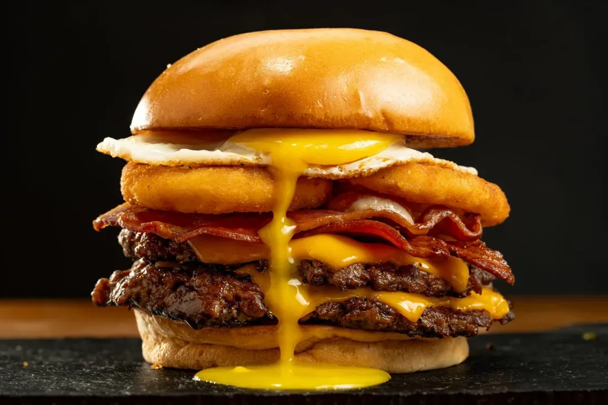
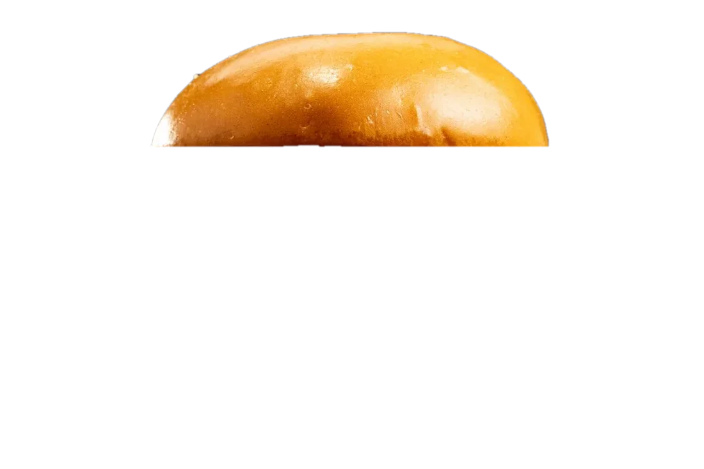
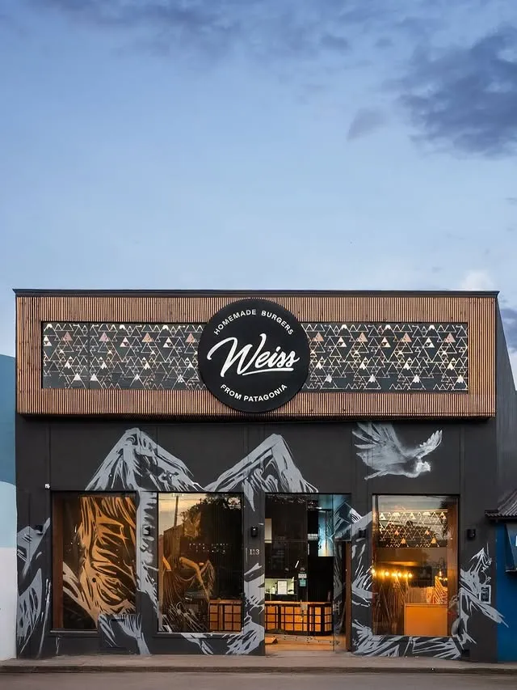
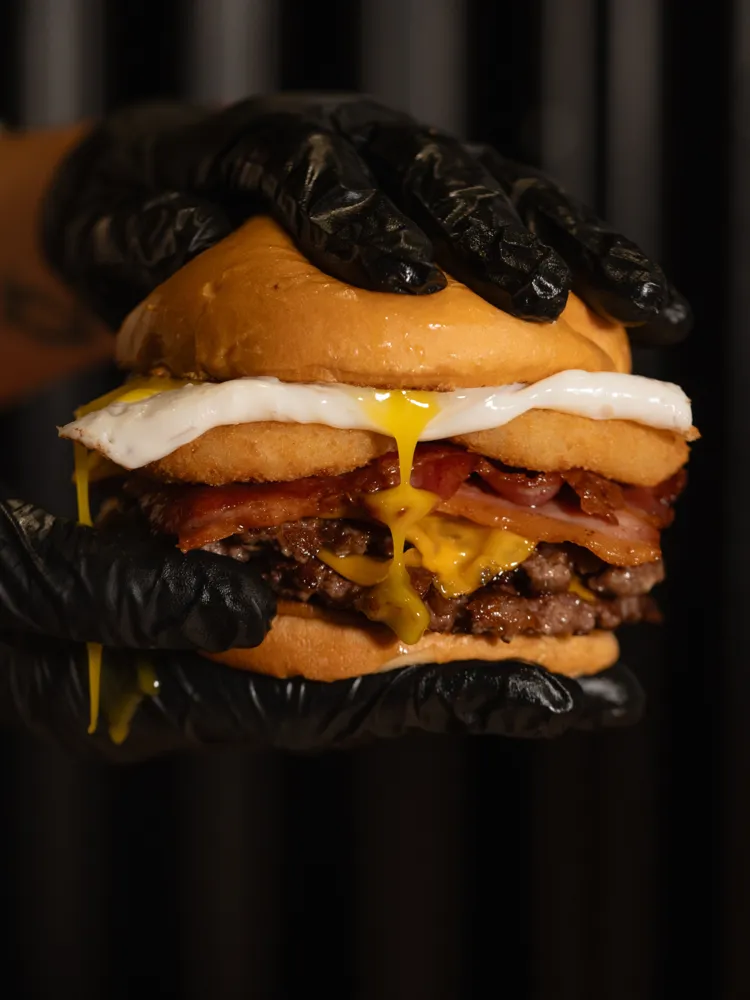
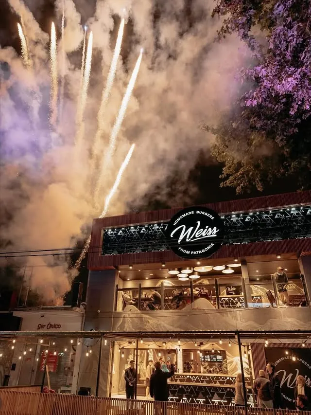
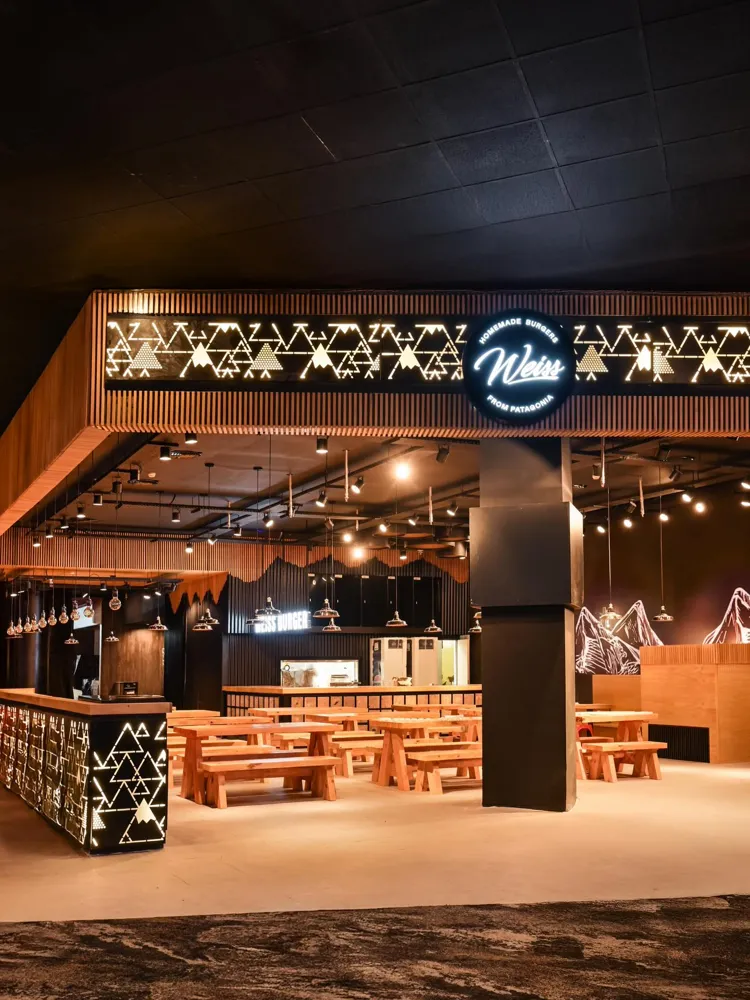
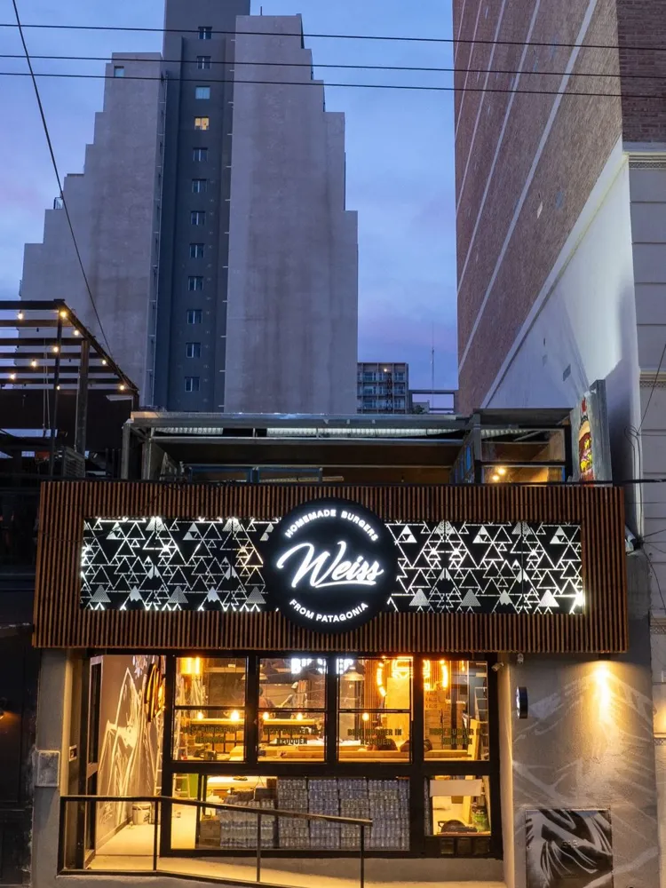
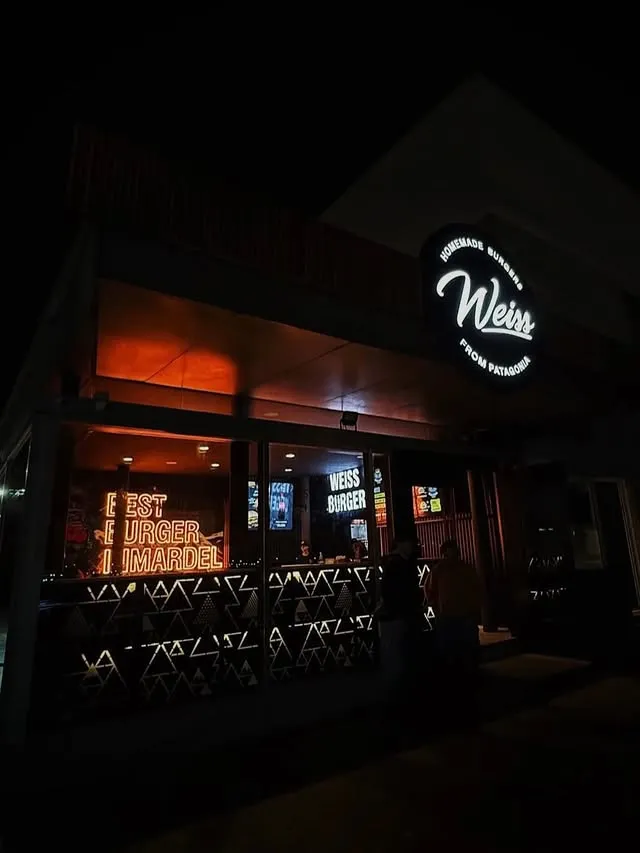

ESTO ES WEISS


Smash burgers caseras nacidas en Bariloche en 2018. Hoy en Argentina, Uruguay y México.
Doble carne · doble cheddar · bacon ahumado · aros de cebolla · huevo frito
Ver la carta Encontrá tu WeissELEGÍ TU BURGA
Arrastrá, deslizá o usá las flechas
LA BURGA
DE OCTUBRE
Cada mes, una receta nueva que está un ratito y se va. Esta es la de este mes.
probarla
BACON EN CUBOS
DE BARILOCHE
AL MUNDO
Tomi Weiss se fue a recorrer Estados Unidos, probó las smash burgers y se las trajo a Bariloche. La primera carta la armó con lo que le recomendaron sus seguidores. El resto es historia… y muchas burgas.
- 16·06·2018Abre el primer Weiss en calle Mitre, Bariloche, el día del debut de Argentina en el Mundial.
- 2022Primera franquicia: Rosario.
- 2025Llega al norte y a Cuyo: Tucumán, Mendoza, Catamarca, Carlos Paz.
- Dic. 2025Cruza el charco: Punta del Este, frente al puerto.
- 2026Auto Weiss en Canning, con drive-thru. Y México.
TOMI WEISS
Abrió el primer Weiss con 20 años, armó la carta con las recetas que le pasaban sus seguidores y hoy es “el tiktoker de las hamburguesas”. Si lo seguís, te enterás antes que nadie de lo que se viene.






LOCALES
Tocá un pin para ver la dirección. Buenos Aires tiene su propio zoom.
¿UN WEISS EN
TU CIUDAD?
Somos 27 locales y vamos por más. Si querés abrir una franquicia Weiss, escribinos.
Quiero mi Weiss · [LINK FRANQUICIAS]